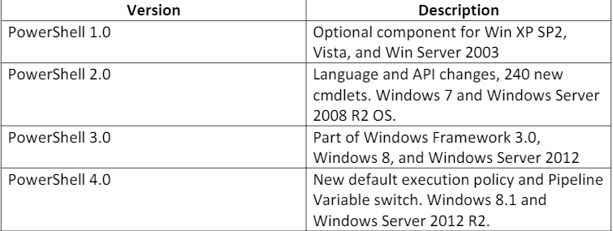

Version 5.1 - - first version to have 2 versions (core vs Desktop)
all modern versions of Windows OS- - Windows Team stopped investing time (pushing for users to move to Powershell 7)
Version 5 - - implemented feature: script block logging
tracks executed scripts and commands run
Version 7- - open source
- - supports Linux, macOS, and Windows clients
- - built to support heterogeneous environments(includes multiple OS types)